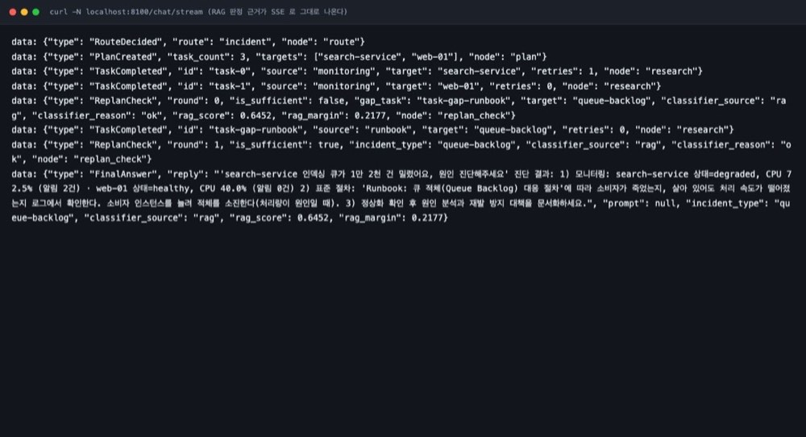

# agent/rag/classifier.py — 판정 5분기 if not enabled: → keyword if index is None: → keyword vector = embedder.embed([text])[0] top1, top2 = index.search(vector) if top1 < min_score: → keyword (0.50) if top1-top2 < min_margin: → keyword (0.03) return top1 # rag
입력 4블록 — [사용자 질문][시스템][상태][알림]. 질의문을 넣는 이유는 기존 오분류 2개가 "질의를 안 본 것"이었기 때문.

게이트가 안전장치다. RAG가 확신하지 못하면 예전 경로로 내려간다. 그래서 기존 동작이 깨지지 않는다는 걸 숫자로 확인할 수 있었다.